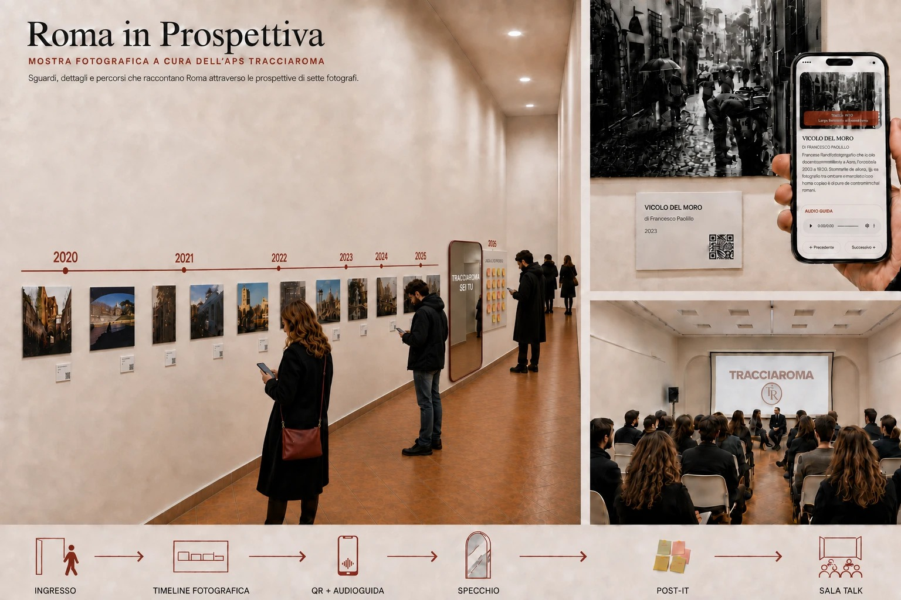
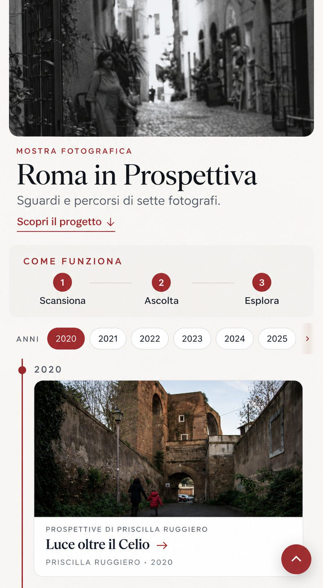
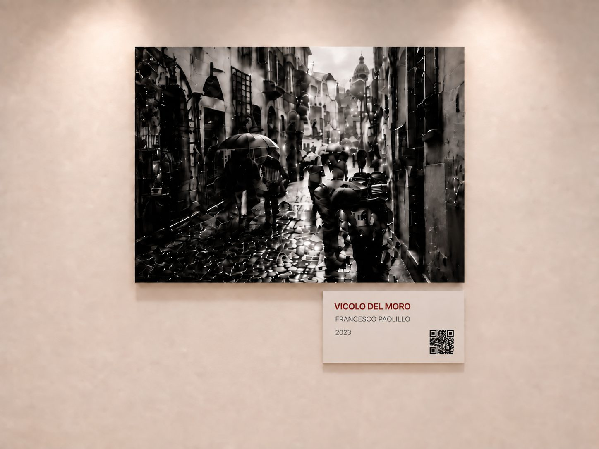
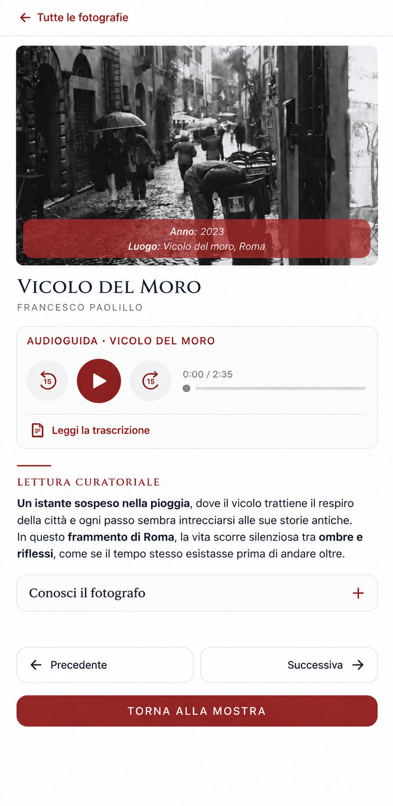
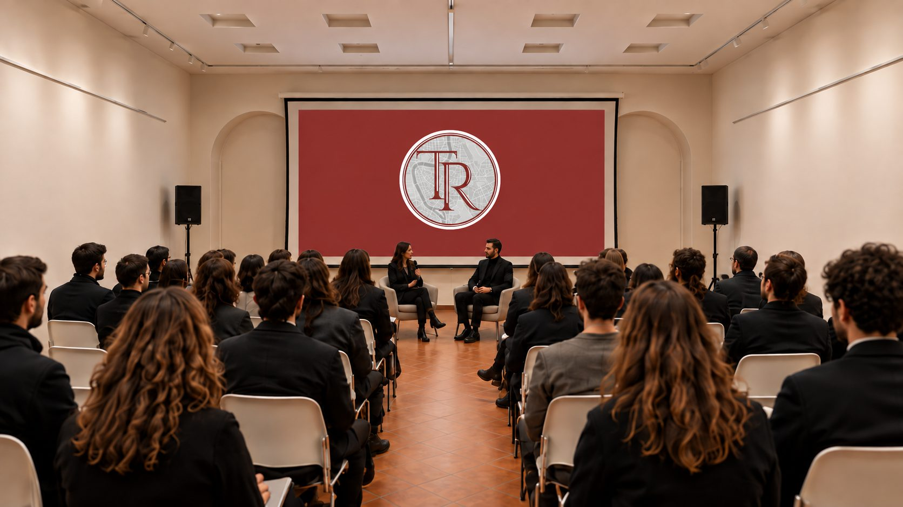

Roma in Prospettiva
Una mostra fotografica per attraversare la storia di TracciaRoma e aprirla alla comunità.
Come può una mostra raccontare l'identità di un'associazione e, allo stesso tempo, lasciare spazio alle prospettive delle persone che la attraversano?

In breve
Roma in Prospettiva è una mostra fotografica realizzata per l'evento di apertura dell'associazione TracciaRoma nel dicembre 2025. Le fotografie di sette autori raccontavano Roma attraverso sguardi differenti, all'interno di un percorso cronologico che collegava la nascita del progetto alla sua evoluzione. La fruizione fisica delle opere era accompagnata da contenuti digitali e audioguide raggiungibili tramite QR code. Il percorso terminava con uno specchio, un invito alla partecipazione e uno spazio per i contributi del pubblico. All'evento hanno preso parte più di cento persone.
La sfida
L'apertura dell'associazione richiedeva qualcosa di più di una presentazione istituzionale. L'esperienza doveva rendere visibile il percorso già compiuto da TracciaRoma, raccontarne l'identità e mostrare la direzione futura: costruire una comunità capace di valorizzare prospettive diverse sulla città.
La mostra doveva inoltre mettere in relazione tre dimensioni: le fotografie e lo spazio fisico, gli approfondimenti digitali e la partecipazione delle persone presenti.
Il mio contributo
Ho lavorato al concept e alla curatela della mostra, progettando la timeline e il modo in cui le opere avrebbero accompagnato il pubblico lungo il corridoio. Ho collaborato alla scrittura dei testi, prodotto personalmente le audioguide e progettato da zero le interfacce web collegate alle fotografie.
Ho diretto e realizzato l'allestimento con il supporto fisico di altre persone. Per il momento conclusivo ho progettato le slide e coordinato il talk insieme agli altri membri del team di TracciaRoma.
Un racconto costruito nello spazio
Il corridoio è diventato una timeline. Le fotografie di Roma, organizzate cronologicamente, rappresentavano le diverse prospettive dei sette autori e accompagnavano il pubblico dalla nascita di TracciaRoma fino al presente.
La sequenza trasformava lo spostamento fisico in un racconto: procedere lungo la mostra significava attraversare le tappe del progetto e comprenderne gradualmente l'evoluzione.

Dalla fotografia all'ascolto
Ogni opera era affiancata da una targhetta descrittiva e da un QR code. La scansione apriva una pagina di approfondimento progettata appositamente per la mostra, con l'immagine, il testo e un'audioguida dedicata.
La componente digitale non sostituiva l'esperienza nello spazio, ma aggiungeva una modalità di fruizione sonora e permetteva di soffermarsi sul racconto di ogni fotografia secondo il proprio ritmo.


“TracciaRoma sei tu”
Alla fine della timeline, uno specchio riportava la frase “TracciaRoma sei tu”. Dopo aver osservato la città attraverso lo sguardo dei fotografi, le persone incontravano la propria immagine.
Lo specchio segnava il passaggio dal racconto del passato all'apertura dell'associazione: TracciaRoma non veniva presentata come una realtà conclusa, ma come uno spazio da costruire attraverso la voce e il contributo di chi decide di partecipare.
Lasciare una traccia
Il percorso espositivo terminava con una superficie dedicata ai post-it. Il pubblico poteva lasciare un commento, un pensiero o condividere un'idea. Questo gesto semplice trasformava la conclusione della mostra in uno spazio di ascolto e restituiva una prima rappresentazione delle persone che si stavano avvicinando alla nuova associazione.
Dal percorso al confronto
Al termine del corridoio, una sala con sedute e proiettore ospitava il talk di presentazione del programma TracciaRoma per il 2026. La disposizione dell'evento costruiva così una progressione coerente: prima l'esperienza individuale delle fotografie, poi il contributo personale e infine un momento collettivo di racconto e confronto.
Ho realizzato le slide della presentazione e coordinato il talk insieme agli altri membri del team.

Risultato e riflessione
L'evento ha coinvolto sette fotografi e accolto più di cento persone. La mostra, le interfacce digitali, le audioguide, lo spazio partecipativo e il talk hanno composto un'unica esperienza, capace di raccontare il percorso di TracciaRoma e introdurre la sua nuova dimensione associativa.
Questo progetto mi ha permesso di lavorare sull'esperienza come sistema: contenuti, spazio, ritmo, interazione digitale e partecipazione dovevano sostenere lo stesso racconto. La decisione più importante è stata non limitarsi a mostrare ciò che TracciaRoma era stata, ma concludere il percorso affidando alle persone un ruolo nella sua evoluzione.